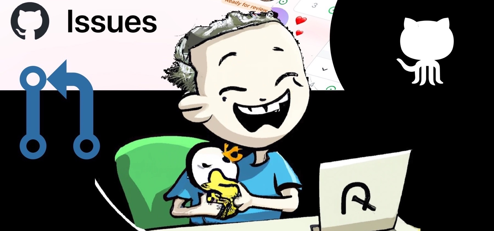
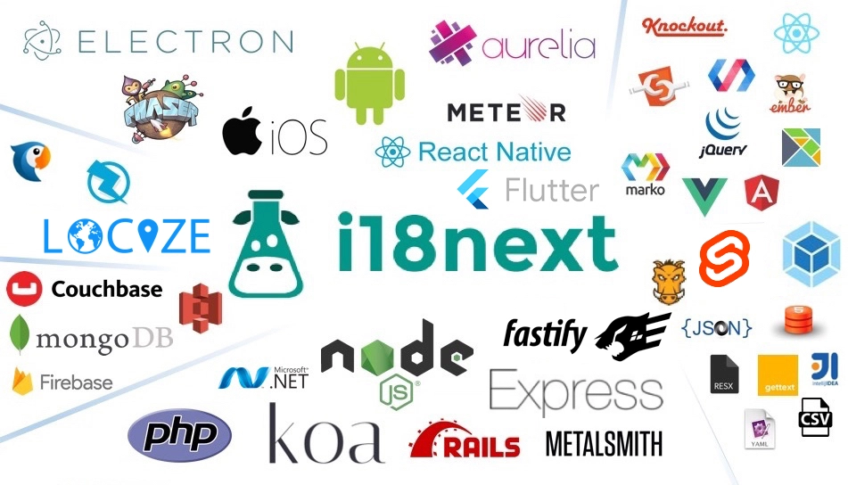
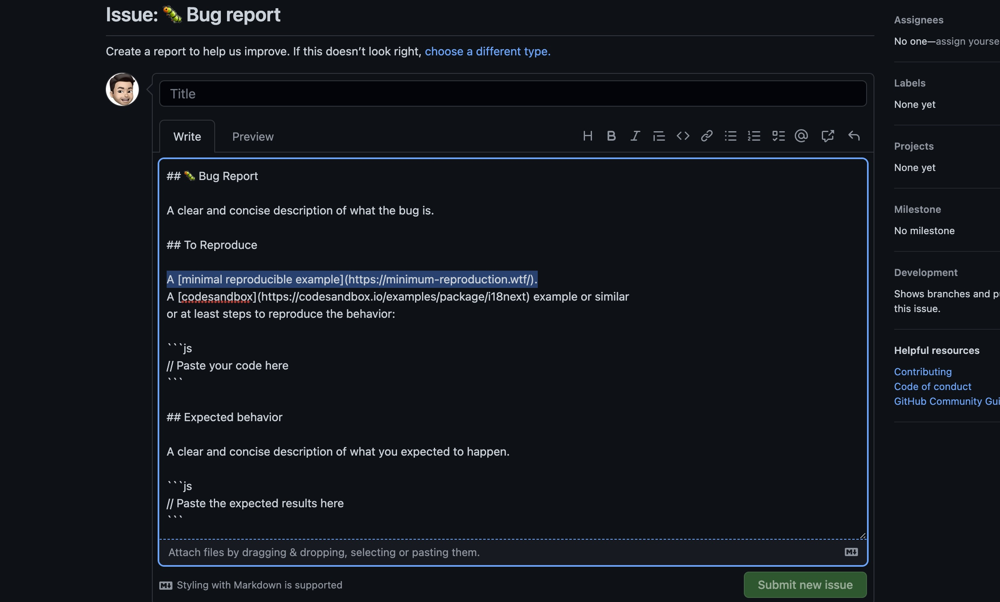

Als Betreuer von i18next, einer Open-Source-Lokalisierungsbibliothek, kann ich bestätigen, dass es nichts Schöneres gibt als das Gefühl der Freude und des Stolzes, das sich einstellt, wenn man zur Open-Source-Gemeinschaft beiträgt. Es ist ein unvergleichliches Gefühl zu sehen, wie andere Ihre Arbeit nutzen und schätzen. Aber mit grosser Macht kommt grosse Verantwortung, und die Pflege eines Open-Source-Projekts kann manchmal eine schwere Last sein.
Lassen Sie mich Ihnen ein Bild malen: Es ist ein sonniger Sonntagnachmittag, und Sie sind bereit, sich zu entspannen und das Wochenende zu geniessen. Doch dann fängt Ihr Telefon an zu summen. Es ist eine Benachrichtigung von GitHub, die Sie auf ein neues Problem oder eine neue Anfrage aufmerksam macht. Sie versuchen, es zu ignorieren, aber das nagende Verantwortungsgefühl setzt ein. Sie können nicht anders als sich zu fragen: "Was ist, wenn dies ein kritischer Fehler ist, der so schnell wie möglich behoben werden muss?" Und so klappen Sie widerwillig Ihren Laptop auf, bereit, das Problem in Angriff zu nehmen. Das, meine Freunde, ist die Freude und die Last der Pflege von Open Source.
Aber es ist nicht nur der ständige Fluss von Problemen und Pull Requests, der überwältigend sein kann. Es ist auch der Druck, das Projekt stetig zu verbessern und zu aktualisieren, um mit der sich ständig verändernden Technologielandschaft Schritt zu halten. Bei i18next zum Beispiel müssen wir über neue Lokalisierungstrends und -technologien auf dem Laufenden bleiben und die Kompatibilität mit den neuesten Versionen beliebter Frameworks und Bibliotheken sicherstellen. Das kann eine Menge sein, vor allem, wenn man auch noch einen Vollzeitjob, eine Familie und andere Verpflichtungen unter einen Hut bringen muss.

Trotz der Herausforderungen ist die Betreuung eines Open-Source-Projekts eine belohnende Erfahrung, die ich gegen nichts eintauschen würde. Das Gefühl der Gemeinschaft und der Zusammenarbeit ist wirklich etwas Besonderes, und es ist eine Ehre, ein Teil von etwas zu sein, das so vielen Menschen hilft. Ausserdem gibt es nichts Schöneres als das Gefühl der Befriedigung, wenn man endlich einen kniffligen Fehler behebt oder eine neue Funktion implementiert, die das Projekt noch besser macht.

Ein weiterer Aspekt der Pflege eines Open-Source-Projekts, der eine Herausforderung darstellen kann, ist der Umgang mit anspruchsvollen Benutzern. Während die meisten Benutzer die harte Arbeit, die mit der Pflege eines Projekts verbunden ist, verstehen und zu schätzen wissen, können einige sehr anspruchsvoll sein und sogar damit drohen, die Bibliothek nicht mehr zu benutzen, wenn ihr spezieller Wunsch nicht umgesetzt wird. Es kann schwierig sein, mit solchen Situationen umzugehen, da Sie Ihre Benutzer zufrieden stellen wollen, aber auch die allgemeine Richtung und die Ziele des Projekts berücksichtigen müssen. Es ist wichtig daran zu denken, dass Sie als Betreuer das letzte Wort darüber haben, was dem Projekt hinzugefügt wird und was nicht. Es ist auch wichtig, mit den Benutzern zu kommunizieren und die Gründe für bestimmte Entscheidungen zu erklären.
Wenn Sie ein Open-Source-Projekt betreuen, denken Sie daran, dass niemand jemanden zwingt, es zu benutzen. Es ist zwar wichtig, auf Rückmeldungen zu hören und zu versuchen, die Bedürfnisse der Nutzer zu erfüllen, aber es ist auch wichtig, sich daran zu erinnern, dass das Projekt quelloffen und frei zu verwenden ist. Das bedeutet, dass die Nutzer die Freiheit haben, das Projekt zu nutzen oder nicht, und sie haben auch die Möglichkeit, etwas dazu beizutragen oder es sogar zu "forken", wenn sie wichtige Änderungen vornehmen wollen. Als Betreuer sollten wir immer offen für Feedback und Vorschläge sein, aber wir müssen auch Vertrauen in unsere Entscheidungen und die Richtung des Projekts haben. Wir sollten auch nicht vergessen, dass die meisten von uns ehrenamtlich arbeiten, und dass dies für die meisten von uns ein Hobby, eine Leidenschaft oder ein Nebenprojekt ist, und kein bezahlter Job. Wir sollten uns nicht verausgaben, indem wir versuchen, es jedem Benutzer recht zu machen. Wenn Nutzer anfangen, auf kostenlosen und fortlaufenden Support zu bestehen, ist das nicht gut.
Eine häufige Herausforderung bei der Pflege eines Open-Source-Projekts ist der Umgang mit Benutzern, die auf GitHub Probleme melden, ohne genügend Informationen zu haben, um das Problem zu reproduzieren und zu untersuchen. Leider ist es nicht ungewöhnlich, dass Benutzer einfach sagen "es gibt einen Fehler" oder "es funktioniert nicht", ohne zusätzliche Details oder Kontext zu liefern. Dies kann es für die Betreuer extrem schwierig machen, das Problem zu verstehen und zu beheben.
Hier kommt das Konzept eines minimalen reproduzierbaren Beispiels ins Spiel. Ein minimales reproduzierbares Beispiel ist ein kleiner, in sich geschlossener Codeschnipsel, der das Problem demonstriert. Es sollte alle Informationen enthalten, die der Betreuer benötigt, um das Problem zu reproduzieren, einschliesslich der Version der Bibliothek, der Umgebung und jeder relevanten Konfiguration.
Die Bereitstellung eines minimalen, reproduzierbaren Beispiels kann den Zeit- und Arbeitsaufwand für die Untersuchung und Behebung eines Problems erheblich reduzieren. Ohne ein solches Beispiel muss der Betreuer möglicherweise Stunden damit verbringen, das Problem zu verstehen und zu reproduzieren, was sowohl für den Betreuer als auch für den Benutzer frustrierend sein kann.
Es ist wichtig, die Benutzer über die Wichtigkeit der Bereitstellung eines minimalen reproduzierbaren Beispiels aufzuklären, und dies in der Projektdokumentation klar zu kommunizieren. Einige Projektbetreuer haben sogar eine Vorlage für Fragen und/oder Pull Request, die den Nutzer auffordert, ein solches Beispiel zu liefern.

Es ist auch wichtig, geduldig und verständnisvoll zu sein, wenn man mit Benutzern zu tun hat, die mit dem Konzept eines minimalen reproduzierbaren Beispiels vielleicht nicht vertraut sind. Die Pflege eines Open-Source-Projekts ist eine Gemeinschaftsarbeit, und es ist wichtig, zusammenzuarbeiten, um das Projekt besser zu machen. Ausserdem ist ein Pull Request, der einen negativen Testfall enthält, sehr wertvoll.
Manchmal ist es sinnvoll, eine grössere Anleitung oder einen Blog-Post zu schreiben, den die Nutzer durchgehen können, um grundlegende Probleme zu vermeiden. Für die Verwendung von i18next in einer React Anwendung haben wir zum Beispiel diesen Blog Post geschrieben, der alle anfänglichen Probleme und Hürden behandelt.
Denken Sie daran, dass Sie als Benutzer einer Open-Source-Bibliothek die Möglichkeit haben, zu ihrer Entwicklung beizutragen und sie noch besser zu machen. Scheuen Sie sich nicht, sich einzubringen und einen Beitrag zu leisten, egal wie klein. Jedes bisschen hilft, und es ist eine grossartige Möglichkeit, der Gemeinschaft etwas zurückzugeben. Auch wenn Sie kein Entwickler sind, können Sie auf andere Weise einen Beitrag leisten, z. B. durch das Schreiben von Dokumentation oder die Beantwortung von Fragen anderer Benutzer.
Der beste Weg, einen Fehler in einer Open-Source-Bibliothek zu beheben, ist, ihn selbst zu beheben und einen Pull Request einzureichen. Es ist nicht nur eine grossartige Möglichkeit, der Gemeinschaft etwas zurückzugeben, sondern es hilft Ihnen auch, neue Fähigkeiten zu erlernen und die Codebasis besser zu verstehen und neue Fähigkeiten zu erlernen. Zögern Sie also nicht, die Ärmel hochzukrempeln und sich zu engagieren.
Zusammenfassend lässt sich sagen, dass die Betreuung eines Open-Source-Projekts eine anspruchsvolle, aber lohnende Erfahrung ist. Es erfordert Hingabe, harte Arbeit und eine Menge Geduld, um ein Open-Source-Projekt reibungslos am Laufen zu halten. Aber der Gemeinschaftssinn und die Zusammenarbeit, die mit Open Source einhergehen, machen das Ganze lohnenswert. Als Betreuer ist es wichtig, sich daran zu erinnern, dass Sie nicht alleine auf dieser Reise sind, und dass es immer andere Betreuer und Mitwirkende gibt, die bereit sind zu helfen. Als Nutzer sollten Sie sich daran erinnern, dass Sie die Macht haben, etwas beizutragen und etwas zu bewirken.

Open Source ist ein Gemeinschaftsprojekt, und jeder spielt eine Rolle für seinen Erfolg. Betreuer, Mitwirkende und Nutzer haben alle die Verantwortung, zusammenzuarbeiten, um das Projekt zu verbessern. Betreuer sollten offen für Feedback und Vorschläge sein, und Benutzer sollten klare, detaillierte Informationen über ihre Probleme liefern und, wenn möglich, Lösungen vorschlagen oder minimale reproduzierbare Beispiele liefern.
Kurz gesagt, die Pflege eines Open-Source-Projekts ist eine anspruchsvolle, aber lohnende Erfahrung, die Menschen zusammenbringt, um auf ein gemeinsames Ziel hinzuarbeiten. Es ist wichtig, dass alle zusammenarbeiten. Lassen Sie uns also weiterhin Open-Source-Projekte unterstützen und einen Beitrag dazu leisten und die Welt zu einem besseren Ort machen, eine Codezeile nach der anderen.
Abschliessend möchte ich mich bei locize für die Unterstützung unserer i18next Community und die Investition in Open Source Aktivitäten bedanken. Ohne diese Unterstützung wäre i18next nicht da, wo es heute ist.